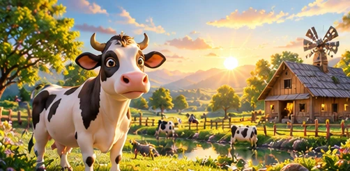
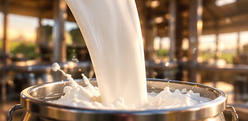
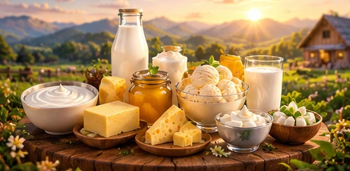

Nature first
Inspired by the balance and beauty of the natural world.
Good dairy begins long before it reaches your table — with care for the little things that matter.

Inspired by the natural worldFreshora is built around a simple belief: everyday food can feel special when it is approached with care. Our visual world celebrates open pastures, fresh ingredients and the comforting rituals that bring people together.
From a refreshing glass of milk to a spoonful of creamy curd or a little golden ghee, we believe goodness belongs in the everyday — naturally, thoughtfully and beautifully.
Meet our productsOur promise is shaped by the values we bring to every part of the journey.
Inspired by the balance and beauty of the natural world.
Thoughtful processes and attention to the details.
Familiar flavours made for moments worth sharing.
A lasting respect for the places that inspire us.
Rolling pastures, quiet mornings and the gentle rhythm of countryside life remind us to keep things simple and care for what matters.


A fresh perspective, every day.